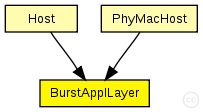
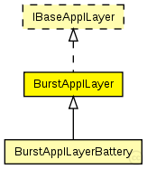

This documentation is released under the Creative Commons license
This documentation is released under the Creative Commons licenseC++ definition: click here
Application layer to test lower layer implementations
This application layer does exactly the same as the TestApplLayer. The only difference is that is sends a burst of broadcast messages instead of just one. The burst size is specified in burstSize and can be set in omnetpp.ini
@sa TestApplALyer
Author: Daniel Willkomm
The following diagram shows usage relationships between types. Unresolved types are missing from the diagram. Click here to see the full picture.
The following diagram shows inheritance relationships for this type. Unresolved types are missing from the diagram. Click here to see the full picture.
| BurstApplLayerBattery (simple module) | (no description) |
If a module type shows up more than once, that means it has been defined in more than one NED file.
| Host (compound module) | (no description) |
| PhyMacHost (compound module) | (no description) |
| Name | Type | Default value | Description |
|---|---|---|---|
| debug | bool |
debug switch |
|
| headerLength | int |
length of the application message header (in bits) |
|
| burstSize | int |
size of the burst |
| Name | Direction | Size | Description |
|---|---|---|---|
| lowerGateIn | input |
from network layer |
|
| lowerGateOut | output |
to network layer |
|
| lowerControlIn | input |
control from network layer |
|
| lowerControlOut | output |
control to network layer |
// Application layer to test lower layer implementations // // This application layer does exactly the same as the // TestApplLayer. The only difference is that is sends a burst of // broadcast messages instead of just one. The burst size is specified // in burstSize and can be set in omnetpp.ini // // @sa TestApplALyer // @author Daniel Willkomm simple BurstApplLayer like IBaseApplLayer { parameters: // debug switch // debug switch bool debug; // debug switch // length of the application message header (in bits) // length of the application message header (in bits) int headerLength @unit("bit"); // length of the application message header (in bits) // size of the burst // size of the burst int burstSize; // size of the burst gates: input lowerGateIn; // from network layer output lowerGateOut; // to network layer input lowerControlIn; // control from network layer output lowerControlOut; // control to network layer }
This documentation is released under the Creative Commons license